Peluang Usaha Nyot Nyot Thai Tea
NYOT NYOT THAI TEA
Nyot Nyot Thai Tea berdiri sejak tahun 2016 dan telah dipercaya oleh ratusan wirausahaan dari berbagai daerah di segala penjuru tanah air Indonesia. Dengan selalu menjaga stabilitas kualitas produk Nyot Nyot Thai Tea berusaha untuk menjadi brand Thai Tea terbaik di Indonesia.
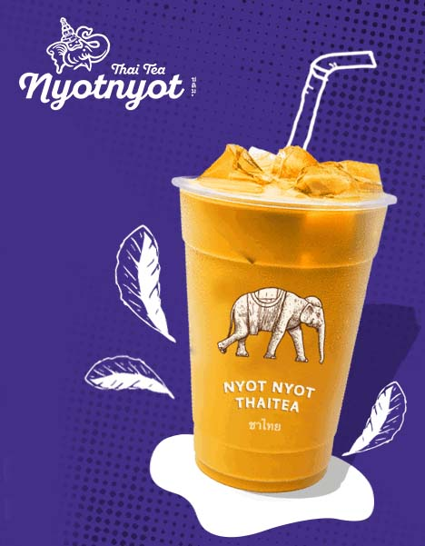
NEW?
Paket booth Nyot Nyot dengan tampilan yang sangat menarik dan dibuat eyecatching sehingga dapat menarik minat konsumen penggemar Thai Tea di Indonesia.
GRATIS TENDA
Setiap mitra yang bergabung akan mendapatkan potongan harga dan GRATIS TENDA dari management.
Keunggulan Nyot Nyot Thai Tea
Kami memberikan banyak kemudahan bagi calon mitra yang akan bergabung dengan Nyot Nyot Thai Tea.
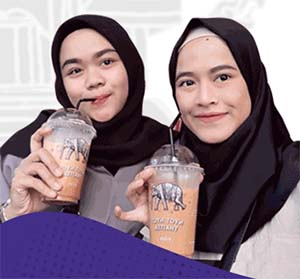
HARGA MURAH
Dengan menyediakan modal 13jt rupiah Anda sudah bisa menjalankan usaha Nyot Nyot Thai Tea
PROSES MUDAH
Kami memiliki sistem dengan pengelolaan outlet yang sangat mudah tanpa ribet
TEAM SUPPORT
Nyot Nyot Thai Tea dikelola dengan management yang telah berpengalaman di bidangnnya dan selalu siap membantu Anda dalam mengelola usaha
TEAM FOLLOW UP
Nyot Nyot Thai Tea dibantu dengan team follow up yang handal dalam menangani permasalahan dan selalu siap membantu Anda
KIRIM CEPAT
Kami memiliki agen pengiriman khusus untuk mengirimkan keperluan usaha Anda. Dan paket yang dipesan hari ini akan dikirim hari ini juga.
MITRA SUKSES
Ayo bergabung menjadi bagian dari ratusan mitra sukses kami yang telah membuktikan bahwa Nyot Nyot Thai Tea mampu memberikan bukti nyata.
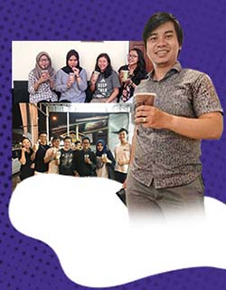
KEVIN BATAM
Saya memutuskan untuk memulai berwirausaha berjualan Nyot Nyot Thai Tea dengan modal yang terjangkau dan banyak peminatnya. Sekarang omzet penjualan saya sudah mencapai 200 cup/ hari dan kini saya bisa membeli satu unit motor Honda Vario 125cc serta melanjutkan studi S1 yang saya impikan.
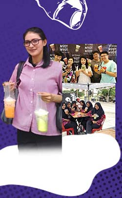
FARDIANA SIDOARJO
Ibu Fardiana merupakan mitra Nyot Nyot asal Sidoarjo. Beliau membuka outletnya di Mall Hero Sidoarjo Jawa Timur dalam satu hari Ibu Fardiana mampu menjual Nyot Nyot Thai Tea sampai dengan 300 cup/ hari pada hari biasa dan sekitar 400-500 cup pada waktu weekend. Kini keuntungan yang beliau peroleh digunakan untuk menambah 2 outlet lagi untuk keperluan jualan di event-event.
TESTIMONI MITRA
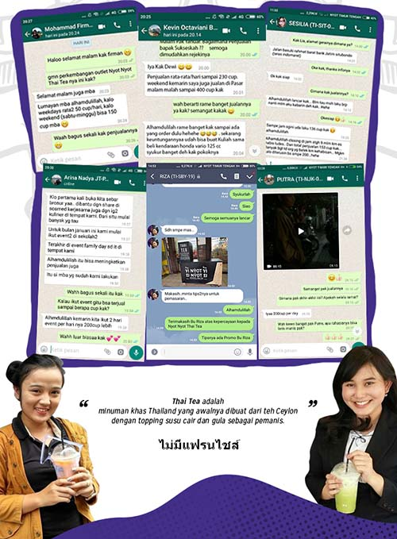
Berikut adalah sebagian dari banyak testimonial yang dikirim langsung dari mitra kami dan terbukti kami memberikan pelayanan lebih dibandingkan produk lain.
” Thai Tea adalah minuman khas Thailand yang awalnya dibuat dari teh Ceylon dengan topping susu cair dan gula sebagai pemanis.”
DETAIL PRODUK
BUKAN TERBUAT DARI BUBUK
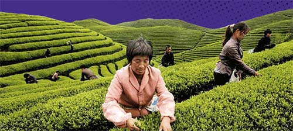
Kami menggunakan teh asli Thailand yang terjaga standard dan mutunya sehingga Thai Tea yang kami hasilkan sangat nikmat.
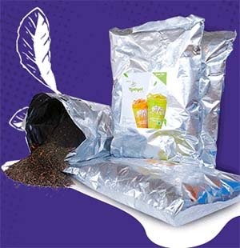
Walau dengan harga sangat minim alias terjangkau kami sangat menjaga kualitas produk kami, sebagai contoh kami menggunakan gelas/ cup printing dengan kualias tinggi yang memiliki standard internasional.
Booth kami sangat menarik dengan desain yang eyecatching sehingga memiliki daya tarik yang tinggi terhadap konsumen. Kami juga menambah Gratis Tenda untuk menambah visualisasi produk kami.
TENTANG NYOT NYOT
Nyot Nyot Thai Tea terus mengelola workshop/ outlet dengan baik untuk mewujudkan hasil yang memuaskan. Berikut data workshop kami.
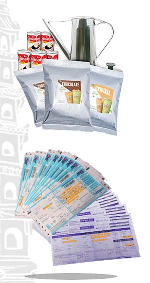
BAHAN BAKU
Kami memiliki pabrik yang khusus memproduksi bahan baku kualitas terbaik, higienis dan 100% halal.
DESIGN
Design booth yang dibuat dengan bahan kualitas terbaik dan desain yang eyecatching.
BUKTI KIRIM
Kami memiliki agen-agen pengiriman terbaik & terpercaya.
CARA BERGABUNG
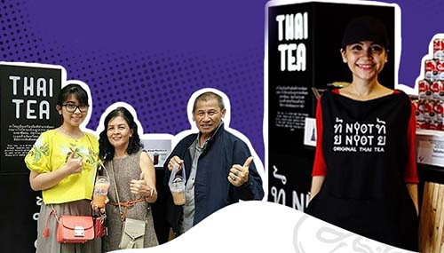
SANGAT MUDAH
Calon mitra langsung bisa langsung menghubungi marketing kami yang tertera di halaman usaha, kemudian calon mitra diwajibkan memiliki lokasi berjualan untuk memenuhi persyaratan.
Di tahap ini calon mitra diwajibkan untuk memilih paket usaha yang akan dibeli oleh calon mitra. Selanjutnya mitra diwajibkan mentransfer sejumlah uang berdasarkan harga paket yang dipilih oleh calon mitra.
Setelah pembayaran paket yang dipilih maka paket franchise akan disiapkan dan akan segera dikirim, paling lambat 2 hari, setelah pelunasan paket usaha yang dipilih.
APA SIH SYARATNYA?
Management kami memberikan berbagai kemudahan dan pelayanan baik kepada calon mitra maupun mitra yang sudah berjalan.
PERSYARATAN
Memiliki modal yang cukup untuk investasi sesuai harga paket franchise
Memiliki komitmen terhadap bisnis ini untuk maju dan berkembang bersama
Bersedia meluangkan waktu untuk terjun langsung mengawasi perkembangan outlet
Memahami resiko bisnis waralaba
Bersedia menaati peraturan yang ada dalam surat kerja sama
Mitra wajib membeli bahan baku dari pusat
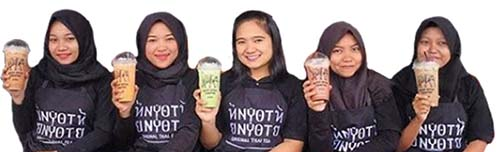
KEBUTUHAN
Lokasi berada di tempat strategis : didepan pusat keramaian /didepan sekolah - sekolah menengah keatas, kampus atau mini market
Luas ukuran tempat sewa minimal sesuai dengan ukuran counter ( 2X1 meter)
Staff Karyawan
PAKET USAHA NYOT NYOT
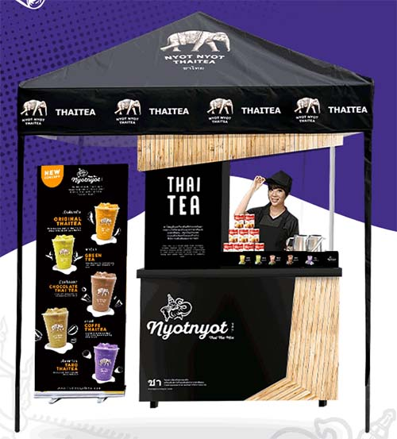
HARGA 13 JT
SIAP JUALAN
- Paket booth lengkap
- Seragam lengkap
- Free bahan baku
- Perlengkapan pembuatan thai tea lengkap
GRATIS TENDA
Setiap mitra bergabung akan mendapatkan potongan harga dan GRATIS tenda dari management.
FREE
PERALATAN NYOT NYOT
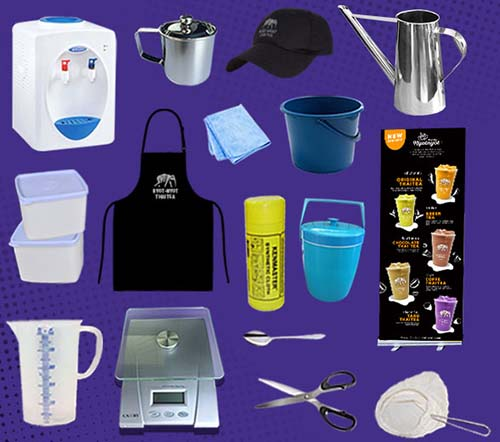
Semua perlengkapan sudah termasuk dalam paket usaha
PASTI UNTUNG
R.O.I
RETURN OF INVESMENT
Semua keuntungan penjualan 100% milik mitra/ no royalty fee
Investasi awal : Rp 13.000.000,-
Penjualan 100 cup/ hari @ Rp 11.000 : Rp 33.000.000,-
(100x11.000x30hari)
Pembelian bahan baku : Rp 12.000.000,-
(100x5.000x30hari)
Biaya operasional :
- Gaji karyawan (2orang) : Rp 2.000.000,-
- Sewa Lokasi : Rp 3.000.000,-
- TOTAL biaya operasional : Rp 5.000.000,-
LABA BERSIH RP 16.000.000,-
B.E.P : 1-2 BULAN
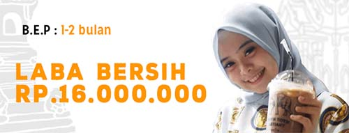
BEST MENU
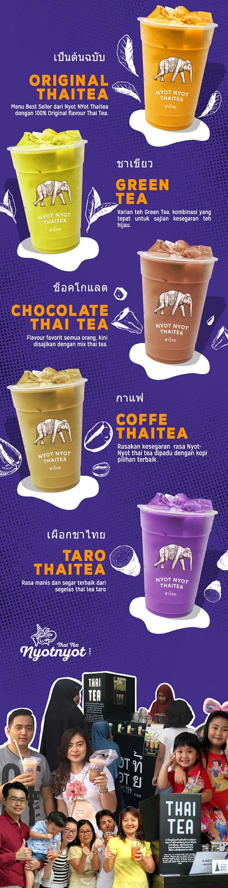
ORIGINAL THAI TEA
Menu best seller dari Nyot Nyot Thai Tea dengan 100% original flavour thai tea.
GREEN TEA
Varian teh hijau, kombinasi yang tepat untuk sajian kesegaran teh hijau.
CHOCOLATE THAI TEA
Flavour favorit semua orang kini disajikan dengan mix thai tea.
COFFEE THAI TEA
Rasakan kesegaran rasa Nyot Nyot Thai Tea dipadu dengan kopi pilihan terbaik.
TARO THAI TEA
Rasa manis dan segar terbaik dari segelas thai tea taro.
NYOT NYOT LOVERS
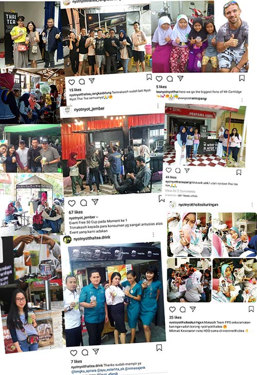
TANYA KAMI?
F.A.Q
FREQUENTLY ASK QUESTION
M = Bagaimana menjadi mitra Nyot Nyot Thai Tea?
NYOT = Bisa lihat di persyaratan untuk menjadi mitra Nyot Nyot Thai Tea
M = Apa yang membedakan franchise Nyot Nyot Thai Tea dengan yang lain?
NYOT = franchise kami bisa dibuka di indoor maupun di outdoor. Dan Nyot Nyot Thai Tea berbeda dari franchise yang lainnya bukti yang real, bukan hanya testimonial
M = Apakah dikenai biaya dalam pengiriman booth?
NYOT = Biaya pengiriman ditanggung oleh mitra
M = Berapa ukuran booth Nyot Nyot Thai Tea?
NYOT = Kurang lebih 60cm x 120cm
M = Jika mitra sudah merasa cocok apa yang harus dilakukan?
NYOT = Langsung menghubungi bagian marketing untuk cara gabungnya
M = Setelah mengisi perjanjian kontrak apa yang harus dilakukan?
NYOT = Calon mitra bisa melakukan pelunasan dengan mentransfer uang senilai paket franchise yang dipilih ke rekening yang sudah diinformasikan oleh bagian marketing
M = Bagaimana jika dalam satu kota sudah ada outlet Nyot Nyot Thai Tea?
NYOT = Dalam satu kota tidak masalah ada beberapa outlet, asalkan radius antara outlet minimal 2 km
M = Untuk karwayan apakah disediakan dari pusat?
NYOT = Tidak,untuk karyawan disediakan oleh mitra
M = Bagaimana dengan training karyawan dan cara penyajian Nyot Nyot Thai Tea?
NYOT = Kami mengirim SOP berupa CD yang dikirim bersamaan dengan booth, yang bersifat mudah diterapkan
M = Apakah boleh jika berpindah lokasi dalam berjualan?
NYOT = Mitra boleh berpindah lokasi asalkan meminta ijin ke kantor pusat dan memberikan alamat lokasi yang baru sebelum berpindah tempat
M = Apakah mitra diperbolehkan dalam mengubah harga jual per porsi?
NYOT = Kami tidak mematok harga per porsi, kami hanya menyarankan untuk harga jual per porsi kisaran Rp 11.000 s/d Rp 15.000 disesuaikan dengan daya beli disekitar outlet
PAKET SAMPLE
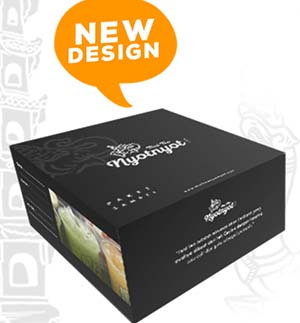
Rp 100.000,- * Belum trermasuk Ongkir
Terdapat 4 variant rasa nyot nyot thai tea lengkap dengan cup, sedotan, buku sop/ aturan pembuatan.
OUR BIG TEAM
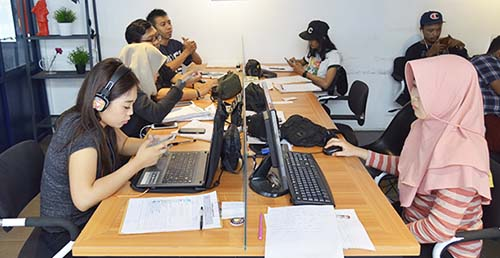
CREATING A GOOD LIFE
#ANSENAFAMILY
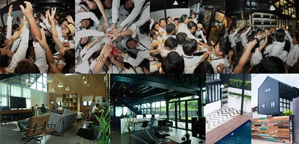
ANSENA PLAY JINGGLE
ANSENA COLOUR IS FUN ft. ROCKET ROCKERS
April 20th.2017 @ Ansena, Solo
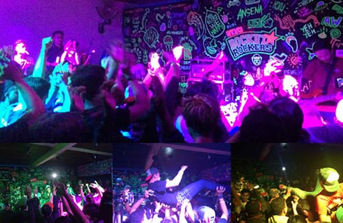
Tagar: #nyot nyot thai tea #waralaba kuliner #waralaba thai tea #peluang bisnis thai tea #peluang usaha thai tea #bisnis kuliner #peluang usaha kuliner #peluang bisnis kuliner